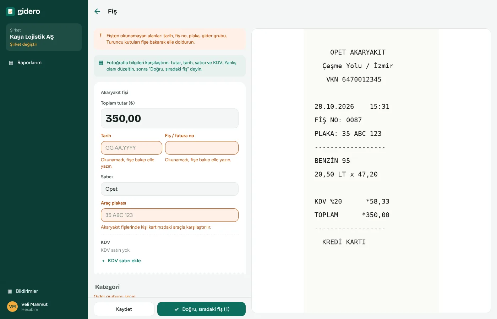

Ana sayfa / Şirketler için
Onay zincirinizi siz çizin, masraflar o yoldan aksın.
Her şirketin onay süreci farklı. Direktörlüklerinizi, müdürlerinizi ve son onayın kimde olduğunu şemada çizersiniz; her rapor o yoldan yürür, kimin elinde olduğu her an görünür.
Bir kişiye dokunun, raporunun yolunu görün
Rapor alttan yukarı onaylanır ve son onay kişisinde biter; sonra muhasebeye ve ödemeye geçer. Şemayı uygulamada sürükleyip bırakarak kurarsınız; buradaki örnek şirkette deneyin.
Bir raporun yolculuğu
Veli Mahmut İzmir fuarında müşteriyle yemek yedi ve depoyu doldurdu. Raporu fişten ödemeye böyle ilerler; bir adıma tıklayıp o ekrana geçebilirsiniz.
Çalışan fişi masa başında da kontrol eder
Bilgisayarda fotoğraf sağda büyük durur, form solda. Okunamayan alanlar turuncudur; "Doğru, sıradaki fiş" ile bir sonrakine geçilir.

Kurallar şirketinize göre
Gider grupları ve sınırlar
Yemek, akaryakıt, konaklama; hesap kodlarıyla. Kişi başı aylık, 3 aylık ya da yıllık sınır koyun; aşım anında görünür.
Vergi uyarıları
Fatura gereken tutar, mükerrer fiş, şirket adına kesilmemiş belge, binek araç kısıtı, geçersiz KDV oranı: her fişte 29 kontrol.
Alkollü içki
Ödenmez, ödenir ama vergiden düşülmez (KKEG) ya da normal gider. Siz seçersiniz; muhasebe fiş bazında değiştirebilir.
Araç ve plaka
Çalışanın araçlarını girin; akaryakıt fişindeki plaka eşleşmezse uyarı çıkar.
Logonuz ve renkleriniz
Şirketinize giren herkes uygulamayı kendi kurumsal renklerinizle görür.
Kim ödedi
Şirket kartı, avans ya da kasa ile ödenenler çalışana ödenmez; muhasebede doğru hesaba yazılır.
Tek paket, kişi sayısı arttıkça ucuzlar
Yalnızca masraf giren çalışanlar sayılır; onaylayıcı, muhasebeci ve ödeme yetkilisi ücretsizdir. Yıllık tek ödemede kişi başı fiyat daha da düşer.
Şirketlerin sorduğu
Onay zincirini kim kurar?
Şirket yöneticisi. Kişileri ekler, ünvanlarını ve kime bağlı olduklarını şemada sürükleyerek belirler, son onayın kimde olduğunu işaretler.
Bir yönetici ayrılırsa raporlar takılır mı?
Hayır. Kişiyi ekipten çıkardığınızda ona bağlı kişiler onun yöneticisine bağlanır ve bekleyen raporlar yeni onaylayıcıya geçer.
Muhasebemiz dışarıda, bir büroda. Olur mu?
Olur. Büronuzdaki muhasebeciyi şirketinize "muhasebeci" rolüyle eklersiniz; onaylanan raporlar onun masasına düşer.
Çalışanın IBAN'ını kim görür?
Kişinin kendisi, muhasebeci ve ödeme yetkilisi. Şirket yöneticisi IBAN'ın kayıtlı olduğunu görür ama kendisini göremez.
Ödeme yetkilisi kim olabilir?
Muhasebeci de olabilir, finanstan başka biri de. Kişi eklerken "ödeme yetkilisi" rolünü verirsiniz; onaylanan raporlar muhasebeden ona aktarılır.
Onay şemanızı 10 dakikada kurun
14 gün ücretsiz. İlk raporu bugün onaylatın.